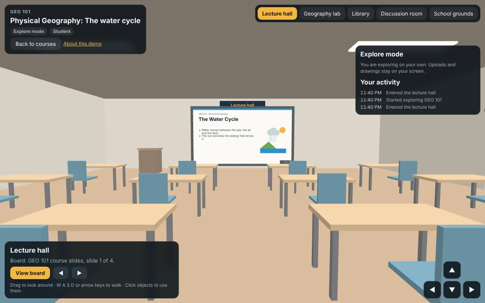

Live demo
Interactive 3D Classroom
A walkable 3D campus where lecturers teach live and students join with a class code.
- Four courses, each with a lecture hall, lab, library and discussion room, plus school grounds with a pitch and playground
- Lecturers put a PDF, slides, a video or a YouTube link on the board, and students' boards follow the page in sync
- Separate lecturer and student sign-in, attendance, raised hands and a class monitor showing where each student is
- A browser re-creation of my award-winning BSc final-year VR classroom
three.jsSupabase Realtimepdf.jsJavaScript